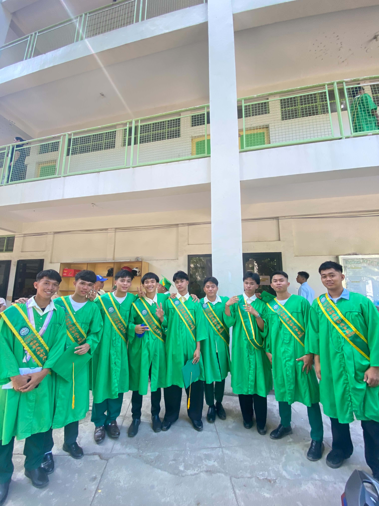

My Senior High School days were an important part of my life. I learned many things, met new people, and made memories that I will always remember.
During my Senior High School years, I experienced many challenges and enjoyable moments. I learned how to manage my time, work with others, and become more responsible as a student.
Some of my favorite memories were spending time with my classmates, participating in school activities, working on projects, and playing basketball with my friends.
My SHS days helped prepare me for college. I am now continuing my studies at the University of Cebu as a BSIT student and looking forward to achieving my goals in the future.